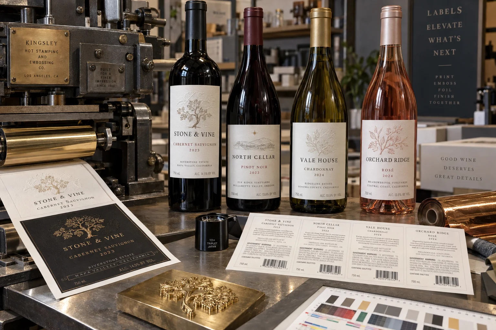

Short answer
Use embossing for one tactile focal point and hot foil for one controlled light-catching detail. Build both around a readable brand and wine identity, then test the decorated construction on the bottle under bottling, refrigeration and ice-bucket conditions.
The request “make everything gold and embossed” usually arrives with a premium price target. I understand the instinct. More finishing feels like more value. On a shelf, however, six reflective elements compete until none of them leads.
Give every finish one job
| Element | Best role | Risk when overused |
|---|---|---|
| Embossing | Crest, monogram, name or small pattern | Paper cracking and noisy texture |
| Hot foil | Fine border, vintage, seal or key word | Glare and weak hierarchy |
| Textured paper | Material character and tactile base | Reduced fine-detail print and wet durability |
| Debossing | Quiet depth or framing | Readability loss in small type |
| Varnish | Protection or subtle contrast | Changing the paper feel |
A composite reserve-wine proof
This is a composite planning example. A winery places gold foil on the crest, brand, vintage, varietal, border and award line. Each element looks premium at 300% on screen. At bottle distance, the label becomes one bright rectangle and the brand disappears.
We remove foil from the supporting copy, keep it on the crest and vintage, then emboss only the crest. The revised label uses less decoration and feels more expensive because the eye knows where to stop. This is one of those jobs where taking something away is the production improvement.
Paper and tooling control the effect
Deep texture can soften very fine foil edges. Heavy embossing can crack coated surfaces or distort nearby copy. Large solid foil areas need heat, pressure and dwell control. The converter should review minimum line weights, trapping, relief depth and the sequence of print, foil, emboss and die cutting before final artwork.
A production proof on the real stock is more useful than a digital mockup. Screens simulate metallic color but not reflected light, paper compression or the shadow created by relief.
Protect the mandatory information
For wine sold in the United States, TTB resources identify mandatory items that can include brand name, class or type, alcohol content, net contents, producer or importer details, sulfite declaration and the government health warning. The exact requirements depend on the product and circumstances.
Decoration must not make required copy difficult to read or create a misleading impression. Keep small mandatory text away from aggressive embossing, foil breaks and high-contrast textures. Use the back label for structured information, not as a storage room for whatever did not fit the front.
Factory-side view
Premium is a controlled decision, not a count of processes
Foil, embossing and textured stock each add setup, tooling and another place for variation. I am happy to sell all three when they carry the design.
When one strong foil detail does the job, the simpler label often looks calmer, runs better and leaves budget for better paper or bottle trials.
Ice-bucket and bottling tests
- Apply labels to the exact bottle, including surface treatment and mold seams.
- Test at the real application temperature and bottle moisture level.
- Check foil and emboss registration on curved viewing surfaces.
- Expose filled bottles to refrigeration, condensation and ice water when relevant.
- Inspect edge lift, paper darkening, whitening, scuffing and foil abrasion.
- Run bottles through guides, cases and dividers before approval.
- Retain an approved production standard under normal and angled light.
When flat digital print wins
For a micro-run, many vintages or frequent copy changes, a well-designed digitally printed label can be more convincing than underfunded decoration. Metallic ink or a restrained simulated effect will not duplicate foil, but it may protect timing and allow each SKU to remain current. The premium decision belongs to the whole launch, not one square inch.
Review the official TTB anatomy of a wine label and wine labeling resources. UPM Raflatac also outlines wine label materials and decoration. For wet-service performance, continue with Wine Label Materials for Ice Buckets.
Frequently asked questions
What is embossing on a wine label?
Embossing uses matched tooling to raise selected areas of the label. Debossing presses areas down. Both require suitable material, pressure and registration allowances.
What is hot foil stamping?
A heated die transfers colored or metallic foil to selected artwork. It creates a distinct reflective or pigmented finish and normally requires separate tooling and setup.
Can foil and embossing be combined?
Yes. Registered foil and embossing can create a strong premium detail, but tolerances, paper stretch, die sequence and minimum line weights should be confirmed with the converter.
Do premium finishes change wine label compliance?
They do not remove mandatory labeling obligations. Required identity, alcohol, net contents, producer or importer information, sulfite declaration and government warning must remain accurate and legible where applicable.
Related label guides
- Food Allergen Labeling: A Packaging Proof Guide
- Label Roll Core Size and Outer Diameter Guide
- Glassine vs PET Release Liners for Roll Labels
Review the complete label construction
Send package photos, material details, finished label size, quantity by artwork, storage conditions and application method. We can review fit, material and production details before preparing a quote and digital proof.